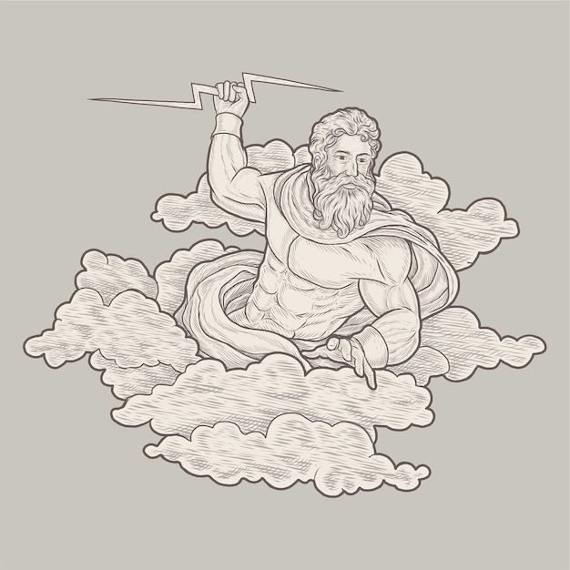
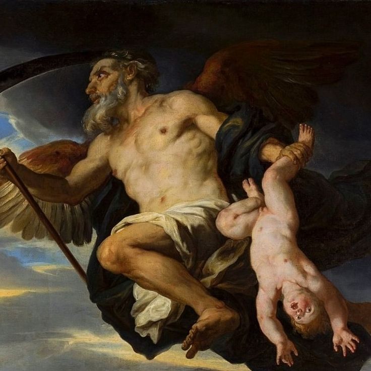

La Mitologia Griega

La mitología griega es uno de los sistemas mitológicos más influyentes y estudiados en la historia de la humanidad. Formaba parte integral de la cultura de la Antigua Grecia y se extendió por todo el mundo griego antiguo, incluyendo regiones como la actual Grecia, Anatolia, Italia y las colonias griegas en el Mediterráneo.
Dioses y Diosas: La mitología griega cuenta con un panteón complejo de dioses y diosas que gobernaban diferentes aspectos del universo y la vida humana. Zeus, el rey de los dioses y dios del cielo y el trueno, era una figura central, junto con otros dioses como Hera (su esposa y diosa del matrimonio), Atenea (diosa de la sabiduría y la guerra justa), Poseidón (dios del mar), Afrodita (diosa del amor y la belleza), y muchos más. Estos dioses eran antropomórficos, es decir, tenían formas humanas y rasgos de personalidad similares a los humanos, pero poseían habilidades divinas.
Mitos y Leyendas: La mitología griega está llena de mitos y leyendas que explican el origen del mundo, la naturaleza y los fenómenos naturales, así como las actividades y experiencias humanas. Estos mitos a menudo incluyen historias sobre la creación del mundo, la guerra entre los dioses y los titanes, los héroes semidioses como Heracles (Hércules), Perseo y Teseo, así como los amores y las tragedias de las divinidades y los mortales.

Obras Literarias: La mitología griega ha sido una fuente de inspiración para numerosas obras literarias, incluyendo epopeyas como la "Ilíada" y la "Odisea" atribuidas al poeta Homero, así como tragedias, comedias y poemas épicos de autores como Esquilo, Sófocles, Eurípides y Hesíodo. Estas obras literarias no solo preservaron los mitos griegos, sino que también los ampliaron y reinterpretaron para las audiencias posteriores.
Influencia Cultural: La mitología griega ha tenido una profunda influencia en la cultura occidental, desde la Antigüedad hasta la actualidad. Ha influido en la literatura, el arte, la música, la filosofía y la religión occidentales, y muchos aspectos de la mitología griega continúan siendo temas recurrentes en la cultura popular contemporánea.
En resumen, la mitología griega es un sistema complejo de creencias y narrativas que ha desempeñado un papel fundamental en la formación de la identidad cultural de la Antigua Grecia y ha dejado un legado duradero en la cultura occidental. Su rica variedad de dioses, héroes y mitos sigue fascinando a las personas en todo el mundo hasta el día de hoy